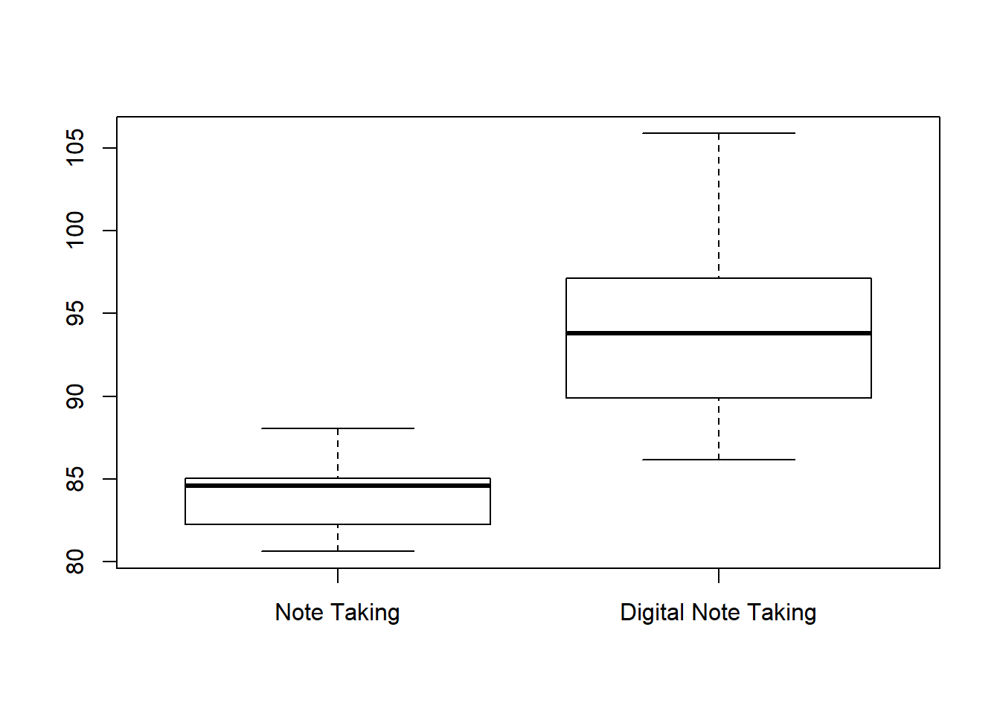

The t-test for paired samples may also be referred to as the t-test for correlated groups. In both cases, the subjects are measured twice. This can be actualized in a pre-treatment, post-treatment design where participants are measured on some aspect, given a treatment, and then measured again. The \[H_0\] for these t-tests are that the mean difference is 0. The \[H_1\] then becomes that the difference is greater than 0 or less than 0.
When we performed a sign test, we needed to supply R with the difference vector. When we do a paired t-test, we can provide both vectors and R will do the rest for us!
set.seed().t.test() when you are using a single sample will not work when you are working with paired samples.y1,y2 where y1 and y2 are both numeric vectors of the same length.paired = TRUE``" This tells R that we are performing a paired t-test.var.equal = TRUE This tells R that you are assuming the variances of both vectors are the same, by doing this you compute a certain kind of test. More on this later in the semester.t.test(y1, y2, paired = TRUE, var.equal = TRUE).With this in mind, compute the t.test for the following example:
A researcher is interested in whether students will perform better when they are allowed to use a computer to take notes compared to when they are only allowed to use pen and paper. He has 15 students take notes with pen and paper and then tests them. He then has them take notes with a computer and then tests them. Are the pen and paper test scores worse than the computer test scores? Compute the appropriate test for this design at an \(\alpha\) level of .05.
Use a seed of 3400 to create two samples of 15 students. Our prediction is that the students who use pen and paper to take notes will perform worse on the test compared to the students who use a computer to take notes. Choose means that will be appropriate for our prediction to be supported (without making the differences too…different!)
Calculate the t value for the experiment and report whether or not there is a significance, and if so, what that significance means.
Remember that when reporting to follow the proper format: \[t(df) = t_{obt}, p =\]
After you have your answers, tell me your \[t_{obt}\] and we will create a vector to show the different values we get.
Remember that the t-test for paired samples is also called the t-test for correlated groups. In this sense, they are related. The t-test for independent samples are for unrelated samples.
We have looked at differences between a calculated sample, and the population mean. We have also looked at differences between two samples in which the participants are the same in order to see if there is a difference less than or greater than zero.
Using an independent t-test will allow us to see if there are differences among groups.
Do women interpret emotions better than men?
Do religious individuals give more to charity than their non-religious counterparts?
Do people rate violent actors as more angering than racist actors?
As you can see, it is quite easy to populate this list with more and more hypotheses.
Consider the following example:
Gaby has the prettiest garden in all of Long Island. She gets the mots compliments and most pictures taken in her garden. Meanwhile, Kim has just an OK garden; it garners some attention for visitors and gets a few compliments here and there. Gaby would like to see if her garden is quantitatively different from Kim’s garden. An independent researcher, David, has vistor services hand a form to all of the patrons that come to the gardens on a particular day. He divides the garden walkways so that some people will only pass by her garden, and some people will only pass Kim’s garden. Patrons fill out on the form a rating from 1-5 ranging from attributes such as cleanliness, presentability, attractiveness, and awe-inspiring. These scores are then averaged into a single number. David aims to compare these ratings and see if Gaby’s garden is indeed ‘better’. He uses an \(\alpha\) of .05. What can he conclude?
set.seed(5307)
Gaby_Garden <-round(rnorm(25,4.7,2),digits=0)
Gaby_Garden[Gaby_Garden <1] <- 1
Gaby_Garden[Gaby_Garden > 5] <-5
Kim_Garden <-round(rnorm(25,3.1,4),digits=0)
Kim_Garden[Kim_Garden <1] <- 1
Kim_Garden[Kim_Garden > 5] <-5
t.test(Gaby_Garden,Kim_Garden,var.equal = TRUE,alternative = "greater")
Two Sample t-test
data: Gaby_Garden and Kim_Garden
t = 2.7809, df = 48, p-value = 0.003861
alternative hypothesis: true difference in means is greater than 0
95 percent confidence interval:
0.4603743 Inf
sample estimates:
mean of x mean of y
4.24 3.08 ###Boxplot
We have used scatterplots to show relationships, and we have used barplot to visualize differences. When it comes to paired samples, it is best to use a boxplot to represent the differences between paired samples. A boxplot shows the median for a sample.
x<-data.frame(note_taking = rnorm(20,84,3),digital_note = rnorm(20,94,5))
boxplot(x$note_taking,x$digital_note,names = c("Note Taking", "Digital Note Taking"))